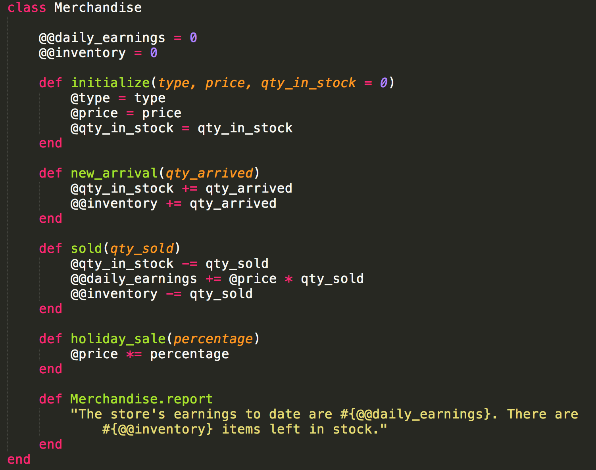
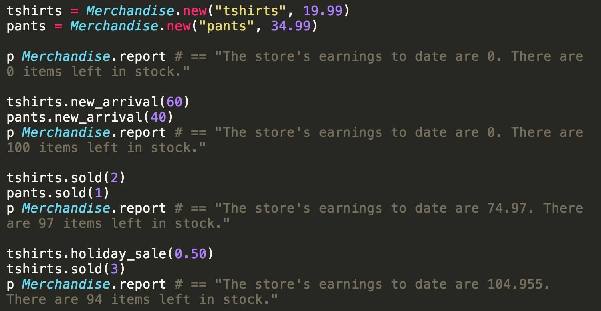

You're Already Working With Objects
You may have heard Ruby referred to as an "object oriented" programming language." It's easy to start using objects in simple Ruby programs before you even know what an object is. When you write a program that puts "Hello, World," the text "Hello, World" is an object that is manipulated by the method "puts." A method is a block of code that acts on an object, using zero or more inputs.
Every object is part of a class. You may know that "Hello, World" is a string, as indicated by the surrounding quotes. Well, this means that it is part of the String class. A class represents a group of objects that share common properties. Classes contain information about how to create new objects of that class, what methods can be used on the class, and what data can be accessed from outside of the class. A particular object inside of a class is called an instance of that class. "Hello, World" is an instance of the String class.
Let's Make a Class
Now that you've been introduced to objects, methods, and classes, I am going to walk you through an example to demonstrate some things you can do with these concepts. In the example below, I create a new class called "Merchandise." We'll be using this class and its instances to track the merchandise in our clothing store. Note that classes are always written with a capital first letter.
Class Variables
After the class definition, you'll notice two variables that begin with "@@." This indicates that these are class variables. Class variables have one common value throughout instances of the class, and by default, can be accessed and edited from within instances of the class. Our class variables are "@@daily_earnings" and "@@inventory." Each is given an initial value of zero. Later on, we will be changing these using methods we'll define.
Initialize
Next, we define our first method. Initialize is a special method that is available to all classes. We use it to specify how new objects will be created. In the example code below, we specify that new instances of the Merchandise class will be declared with the inputs "type", "price", and an optional parameter "qty_in_stock" which defaults to zero if a value is not entered. Then, below the initialize definition, we define three instance variables for our new instance - these are the variables preceeded by an "@." Instance variables, by default, are private to the instance. This means that they cannot be accessed from outside of the object. They are generally used to express a trait or state of an object. In this case, a new instance of the Merchandise class will represent a type of clothing item that the store carries - for example, tshirts, or pants. Each clothing type will have a price and a quantity in stock (and a type) that will be defined based on the initialize inputs.
Instance Methods
Next, we create three methods of our own. These methods are being defined within the Merchandise class, and therefore can be applied to any instance of this class. new_arrival is called on an instance of Merchandise when a shipment of that item comes in. The user enters the quantity that came in. This value is then used to pudate first the qty_in_stock instance variable of the instance it was called on. It also updates the class variable, @@inventory, which tracks the total number of items in stock from all instances of Merchandise. The "sold" method likewise manipulates instance and class variables to represent a specified quantity of an item being sold. And the "holiday_sale" method modifies the value of the @price instance variable (of the instance the method is called on) to apply a specified discount rate.
Class Methods
The last portion of out Merchandise class definition is the definition of Merchandise.report. This defines a class method called "report." A class method is called on the class itself, on Merchandise. Alternatively, the previous three methods discussed are instance methods, and are called on instances of the Merchandise class.
Testing Our Merchandise Class
Now we have completed defining our Merchandise class - Time to test it out. Below, I first define two instances of the Merchandise class: "tshirts" and "pants." New instances are declared with the method "new" called on the class name, wit the inputs specified by "initialize" earlier on.
First we run our class method, Merchandise.report. This shows that our earnings and inventory are both currently zero. This is becase no merchandise has yet arrived or been sold.
Next, the new_arrival method is called on both of our new Merchandise objects: The store received 60 new tshirts and 40 new pants. When we run our merchandise report, it reflects that our inventory has been increased by the number of tshirts and pants that came in.
Now, we've got our first customer! She bought two tshirts and one pair of pants. We call the "sold" method on both instances with the appropriate inputs, and run the merchandise report again. The sale is reflected in the earnings, which sum the prices (instance variable, @price) of all of the items sold, and in the inventory class variable.
Last, it is memorial day, and we want to take 50% off of all shirts. This is performed using the "holiday_sale" method, and the merchandise report again reflects the result of the post-discount sales.
Taking This Program Further
This program is rather simple. But it could be expanded to do much more. Tshirts could become the name of a sub-class that contains individual tshirt objects. Then when a tshirt is sold, the date of sale could be recorded in a database. This data collected across all pieces of merchandise could be used to find out what is selling the most quickly. The program could also be adapted to display how many tshirts are left in the store. Or if the store has multiple locations, a "location" instance variable could be added to provide the capability to find out if a sold out item is available at a nearby store. The possibilities are endless!